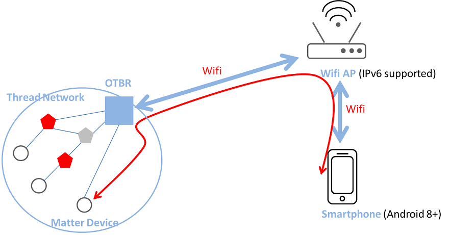
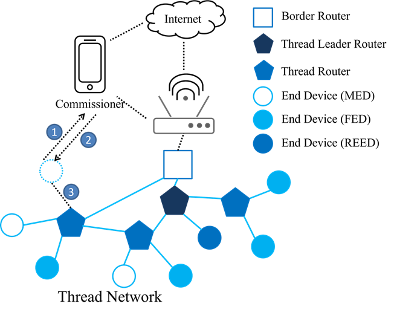
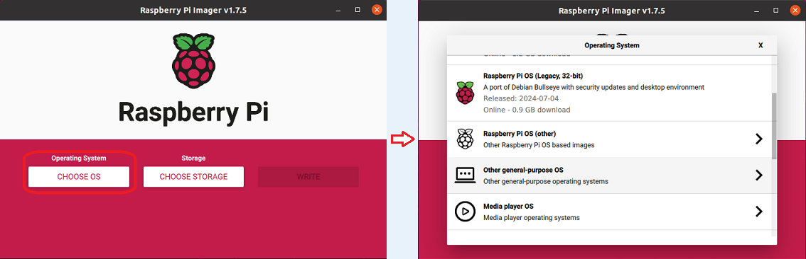
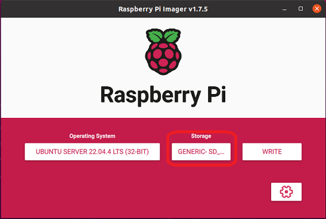

OpenThread Border Router
A Border Router is a device that could route packets to and from the mesh network. A Thread Border Router is the device connected a Thread network and other IP-based networks, such as Wi-Fi or Ethernet.
Terminology and Concepts
This section provides a detailed introduction to the key network functionalities, features, and services supported by the Border Router. These capabilities provide robust support for modern network environments, enabling seamless communication, management, and configuration across multiple network topologies.
Key Network Functionalities
Bidirectional IP Connectivity
Establishes bidirectional IP connectivity between Thread and Wi-Fi/Ethernet networks, ensuring devices can communicate smoothly across different network protocols. This connectivity is particularly important in environments with multiple devices and extensive network coverage.
Bidirectional Service Discovery
By using mDNS and SRP, the Border Router enables bidirectional service discovery for devices within both Wi-Fi/Ethernet and Thread networks. This function facilitates automated device discovery and configuration, enhancing network efficiency.
Infrastructure-Based Thread Partition Merging
Allows independent Thread networks to work collaboratively by merging partitions over IP links, forming a larger unified network, which enhances redundancy and reliability.
External Thread Commissioning
Offers a convenient and secure method for network admission by allowing external devices (like smartphones) to authenticate and commission new devices.
Features
Web GUI Configuration and Management
Provides a user-friendly graphical interface to simplify the configuration and management of the Border Router. Users can perform operations quickly through this interface, significantly improving management efficiency.
Border Agent Support
Integrated with externally commissioned Thread Border Agents, it offers a secure way to manage device access and permissions, ensuring the security of network resources.
DHCPv6 Prefix Delegation
Assigns and manages IPv6 prefixes within the Thread network, allowing devices to obtain legit IP addresses.
NAT64 and DNS64 Support
Facilitates access for IPv6-only devices to IPv4-only network resources, ensuring broad network compatibility and interoperability.
OpenThread-based Support
Leverages OpenThread features to ensure devices can efficiently utilize existing network protocols and technologies.
Docker Support
Enables rapid deployment and expansion of the Border Router in various environments, in line with modern IT deployment needs.
Services
mDNS Publisher
Helps external devices discover and connect to the Border Router and its associated Thread network, enhancing device network integration.
PSKc Generator
Provides automated key generation to ensure secure network communication, reducing the potential for human error.
Web Services
Offers an intuitive Web User Interface (UI) that allows network administrators to easily manage and monitor the Thread network, optimizing network performance.
Through these functionalities and features, the Border Router offers powerful and flexible solutions for modern networks, ensuring efficient and reliable performance in evolving network environments.
Network Topology
The network topology of a Thread Border Router primarily includes the following components:
Thread Network
Composed of multiple low-power devices (such as sensors and lights), each capable of communicating with one another, forming a wireless mesh network.
Border Router
Acts as a bridge connecting the Thread network with external IP networks (like home Wi-Fi or Ethernet), enabling Thread devices to access external networks and the Internet.
Wi-Fi/Ethernet Network
Connected to the OTBR, allowing Thread network devices to communicate with devices within this network.
Service Discovery
OTBR uses protocols to automatically discover services within the network, allowing devices to easily find and utilize local resources.
Network Interoperation
Supports connecting IPv6 devices with IPv4 network resources, ensuring mutual access and communication.
The figure below illustrates an example of a network topology where the OTBR connects the Thread network to other IP-based networks.
{kind=link}

OTBR connects the Thread network to other IP-based networks
External Thread Commissioning
During the external Thread commissioning process, a Commissioner device connected to different networks (like Wi-Fi or Ethernet), instead of the Thread network, is used. This external Commissioner, such as a smartphone, utilizes the Thread Border Router as a mediator to facilitate the joining of new devices to the Thread network.
The following is the process for using a smartphone for external Thread commissioning:
Use a mobile app to scan BLE broadcasts from the Thread end device and establish a BLE connection.
The mobile app synchronizes the OTBR network credentials to the Thread end device via the BLE connection.
The Thread end device joins the Thread network using the credentials.
The figure below shows an example of a Thread network topology and demonstrates the process of using a smartphone for external commissioning.
{kind=link}

The process of using a smartphone for external commissioning
Sample Projects
Requirements
To set up an OpenThread Border Router (OTBR) environment, ensure you have the following hardware and software. Below are the detailed requirements for the setup:
Hardware
A Raspberry Pi 3/4 device and a SD card with at least 8 GB capability
A Wi-Fi AP without IPv6 Router Advertisement Guard enabled on the router
8771GUV RCP dongle
Matter device (e.g. smart plug)
Android phone with at least Android 8.1
Software
Role |
Hardware |
Software |
|---|---|---|
OTBR |
Raspberry Pi RTL8771GUV RCP dongle |
Raspberry Pi Imager |
Wi-Fi AP |
Wi-Fi AP |
|
Thread end device |
Matter device (e.g. smart plug) |
|
Test device |
Android phone |
CHIPTool |
Environment Setup and Test Flows
Setup OTBR on Raspberry Pi
Prerequisite: User sould prepare a RCP mode Thread device for OTBR.
Setup Respberry Pi.
Download and install Raspberry Pi Imager.
Select .

Select .

Select Settings, Fill in the hostname field, check enable SSH and fill in the username and password fields, check Configure wireless LAN and fill in the SSID and password fileds if necessary.

Save and click write button to flash the boot image into the SD card.
Insert the SD card into Raspberry Pi and power on, now you finished the setup of Raspberry Pi.
{kind=link}
{kind=link}
Clone the OTBR repository.
$ git clone https://github.com/openthread/ot-br-posix
Modify the device port of RCP dongle.
Modify the device port as ttyACM0 and the baudrate as 2000000.
$ cd ot-br-posix $ vi CMakeLists.txt set(OTBR_RADIO_URL "spinel+hdlc+uart:///dev/ttyACM0?uart-baudrate=2000000"
Build and install OTBR.
Install dependencies.
$ ./script/bootstrap
Use Ethernet for border routing.
$ INFRA_IF_NAME=eth0 ./script/setup
Use Wifi for border routing.
$ INFRA_IF_NAME=wlan0 ./script/setup
Note
Note that if you are not sure what the network interface name is. You could type ifconfig command to list all the network interfaces.
Verify the 8771GUV RCP dongle for OTBR.
Connect the usb port between Raspberry Pi and 8771GUV RCP dongle.
Restart and check OTBR status.
8771GUV would be recognized as /dev/ttyACM0 and the active (running) state indicates you succeed the setup of OTBR on Raspberry Pi.
$ sudo service otbr-agent restart $ sudo service otbr-agent status ● otbr-agent.service - Border Router Agent Loaded: loaded (/lib/systemd/system/otbr-agent.service; enabled; vendor preset: enabled) Active: active (running) since Mon 2021-03-01 05:46:26 GMT; 2s ago Main PID: 2997 (otbr-agent) Tasks: 1 (limit: 4915) CGroup: /system.slice/otbr-agent.service └─2997 /usr/sbin/otbr-agent -I wpan0 -B wlan0 spinel+hdlc+uart:///dev/ttyACM0?uart-baudrate.. Mar 01 05:46:26 raspberrypi otbr-agent[2997]: Initialize OpenThread Border Router Agent: OK Mar 01 05:46:26 raspberrypi otbr-agent[2997]: Border router agent started.
Test Steps
Follow the instructions provided below:
Start OTBR and Form Thread Network.
Start the otbr-agent service.
$ sudo service otbr-agent restart $ sudo service otbr-agent status ● otbr-agent.service - Border Router Agent Loaded: loaded (/lib/systemd/system/otbr-agent.service; enabled; vendor preset: enabled) Active: active (running) since Mon 2021-03-01 05:46:26 GMT; 2s ago Main PID: 2997 (otbr-agent) Tasks: 1 (limit: 4915) CGroup: /system.slice/otbr-agent.service └─2997 /usr/sbin/otbr-agent -I wpan0 -B wlan0 spinel+hdlc+uart:///dev/ttyACM0?uart-baudrate… Mar 01 05:46:26 raspberrypi otbr-agent[2997]: Initialize OpenThread Border Router Agent: OK Mar 01 05:46:26 raspberrypi otbr-agent[2997]: Border router agent started.Form a Thread network.
$ ot-ctl dataset init new $ ot-ctl dataset commit active $ ot-ctl ifconfig up $ ot-ctl thread start
Wait a few seconds and verify the network status.
Tip
Make sure the OTBR become the leader role.
$ ot-ctl state leader
$ ot-ctl netdata show Prefixes: Prefixes: fd76:a5d1:fcb0:1707::/64 paos med 4000 Routes: fd49:7770:7fc5:0::/64 s med 4000 Services: 44970 5d c000 s 4000 44970 01 9a04b000000e10 s 4000 Done
$ ot-ctl ipaddr fda8:5ce9:df1e:6620:0:ff:fe00:fc11 fda8:5ce9:df1e:6620:0:0:0:fc38 fda8:5ce9:df1e:6620:0:ff:fe00:fc10 fd76:a5d1:fcb0:1707:f3c7:d88c:efd1:24a9 fda8:5ce9:df1e:6620:0:ff:fe00:fc00 fda8:5ce9:df1e:6620:0:ff:fe00:4000 fda8:5ce9:df1e:6620:3593:acfc:10db:1a8d fe80:0:0:0:a6:301c:3e9f:2f5b Done
Power On Matter Device.
Power on the Matter device.
Wait for the commissioning process to start from Mobile phone.
Note
Note that if the Matter device has been commissioned with other mobile device, you could follow the guideline of Matter device to factory reset it (e.g. press and hold the power on button for 10s).
Connect Mobile Phone to WiFi.
Connect your mobile phone to the same WiFi Access Point (AP) as the OTBR.
Ensure the mobile phone and OTBR are on the same network.
Launch CHIPTool App.
Select PROVISION CHIP DEVICE WITH THREAD item to scan the QR code of Matter device.
Once successed, the settings page of OTBR would be displayed as figure down below.

Fill in the corresponded settings of OTBR then click SAVE NETWORK to start commissioning.
You could type below commands on OTBR to get the corresponded settings:
$ ot-ctl channel $ ot-ctl panid $ ot-ctl extpanid $ ot-ctl networkkey
Note
Note that during the developing phase, since the official certificate has not yet been obtained, you may see the dialog box as shown below pop up during the commissioning process. Please select CONTINUE to continue the process. When the dialog box shown on the bottom right pops up, it indicates successful commissioning.

Complete Commissioning.
Wait for the commissioning process to complete.
Once completed, proceed to the next step.
Enter Control Panel.
In the CHIPTool app, select the menu item: LIGHT ON/OFF & LEVEL CLUSTER.
This will open the control panel for the Matter device.
Control Matter Device.
Use your mobile phone to control the Matter device through the OTBR.
Test functionalities such as turning the light on and off, and adjusting the light levels.
Finally, you could control the Matter device as figure down below by the mobile phone through OTBR.

The figure below illustrates the test steps for controlling a Matter device via OTBR.

Test steps for controlling a Matter device via OTBR
References
[2] OpenThread Border Router GitHub
[3] Thread Border Router - Bidirectional IPv6 Connectivity and DNS-Based Service Discovery